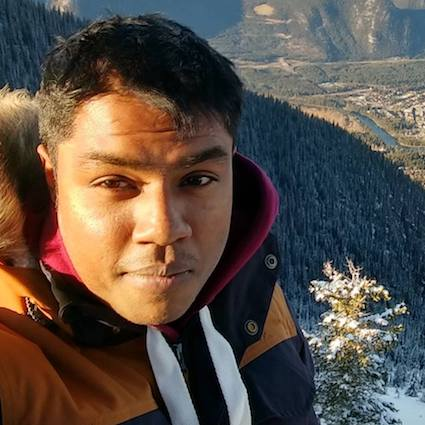

|
Abhirut GuptaResearch Software Engineer Google Research I work as a Software Engineer on the Advertisement Sciences team in Google Research, Bangalore. At Google, my work broadly encompasses various aspects of query understanding. My research interests include Natural Language Processing and Machine Translation, with a focus on low resource scenarios. I finished my Masters from IIT Bombay in 2014, and my Bachelors in Computer Science from NIT Nagpur in 2012. From 2014 to Feb 2020, I worked as a Software Engineer at IBM Research in Bangalore. I worked on a variety of language and understanding problems, and received 2 Outstanding Technical Achievement awards for my work during the period. |
 |